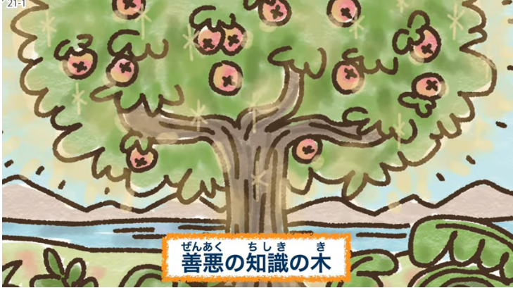
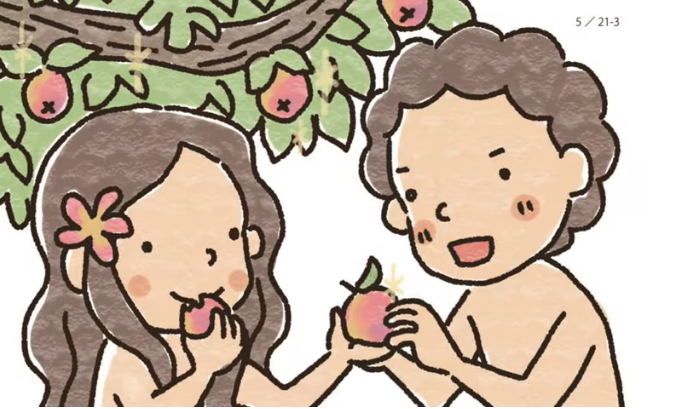

一、神様のご命令 (1~3節)
二、罪の本質 (4~13節)
三、罪の結果(14~24節)
Lyricist (作詞)：Sarah F. Adams (莎拉 亞當斯)
Composer (作曲)：Lowell Mason (洛厄爾 梅森)
Nearer , my God , to Thee！
(讓我靠近你，我的上帝！)
Nearer to Thee !
(讓我更接近你！)
E’en though it be a cross
(雖然這是個枷鎖)
That raiseth me
(卻能使我成長)
Still all my song shall be
(但我所有的歌聲)
Nearer My God , to Thee !
(仍然會更接近你，我的上帝 ! )
Nearer , my God , to Thee！)
(讓我靠近你，我的上帝！)
Nearer to Thee !
(讓我更接近你！)
Though like the wanderer
(雖然我像個流浪者)
The sun gone down
(太陽已經下山了)
Darkness be over me
(黑暗已經籠罩著我)
My rest a stone
(我想要歇息了)
Yet in my dreams I’d be
(可是在我的夢裡)
Nearer my God , to Thee！
(我的上帝，我離你更近了！)
Nearer , my God , to Thee！
(讓我靠近你，我的上帝！ )
Nearer to Thee !
(讓我更接近你！)
Or if on joyful wing
(或者在愉悅的翅膀上)
Cleaving the sky
(劃過了天際)
Sun , moon , and stars forgot
(太陽，月亮和星星它們都已忘記)
Upwards I fly
(我還要向上飛)
Still all my song shall be
(但我所有的歌聲)
Nearer , my God , to Thee !
(仍然會更接近你，我的上帝 ! )
Nearer , my God , to Thee！
(讓我靠近你，我的上帝！)
Nearer to Thee！
(讓我更接近你！)
Nearer , my God , to Thee！
(讓我靠近你，我的上帝！)
Nearer to Thee！
(讓我更接近你！)